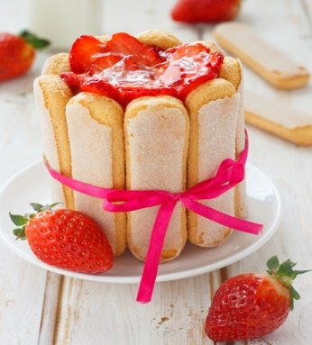

Charlotte aux fruits
Ingredients
6×
- 500 g de fromage blanc
- 3 c. à s. de sucre
- 1 sachet de sucre vanillé
- 30 biscuits cuillère
- 500 g de fraises

Préparation
Étape 1
Mélanger 500 g de fromage blanc avec 3 c. à s. de sucre et 1 sachet de sucre vanillé (ou extrait de vanille).
Étape 2
Tremper 30 biscuits cuillère dans de l’eau sucrée (un simple aller-retour) et en tapisser le fond puis le tour du moule.
Étape 3
Alterner une couche de fromage blanc, une couche de 500 g de fraises (ou autre fruit) et une couche de biscuits. Recommencer une fois et terminer par les biscuits.
Étape 4
Mettre un poids dessus et laisser reposer 6h au réfrigérateur.
Étape 5
Décorer avec les fraises restantes avant de servir.
Conseils
Ne pas trop imbiber les biscuits, sinon la charlotte ne se tient pas.